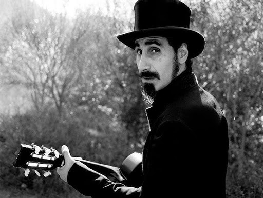

Biografia

Serj Tankian è un cantante, attvista, cantautore e polistrumentista statunitense con origini armene, cofondatore e frontman del gruppo musicale alternative metal/nu-metal System of a Down.
Discendente diretto di un sopravissuto al genocidio armeno, si è sempre impegnato sia in gruppo che da solo a diffondere un messaggio di pace contro la guerra, criticare le falle nei governi mondiali e battersi per il riconoscimento del genocidio armeno del 1915-1916.
Nel 2002 ha fondato con gli altri membri dei S.O.A.D. e Tom Morello (chitarrista dei Rage Against the Machine, altro gruppo metal di critica politica) l'organizzazione no profit Axis of Justice.